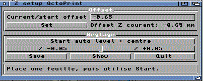

|
Menu | OctoControlSpeak | Troubleshooting ZSetupMUI PurposeZSetupMUI helps adjust the printer Z offset from the Amiga. WarningThis tool sends real G-code movement and Z-offset commands. Wrong values can make the nozzle hit the bed. Use it only if you understand your printer Z setup. General SequenceG28 Home G29 Auto-level if supported M851 Read/write Z offset on Marlin firmware M500 Save settings For safety, default values should stay conservative when distributed. |